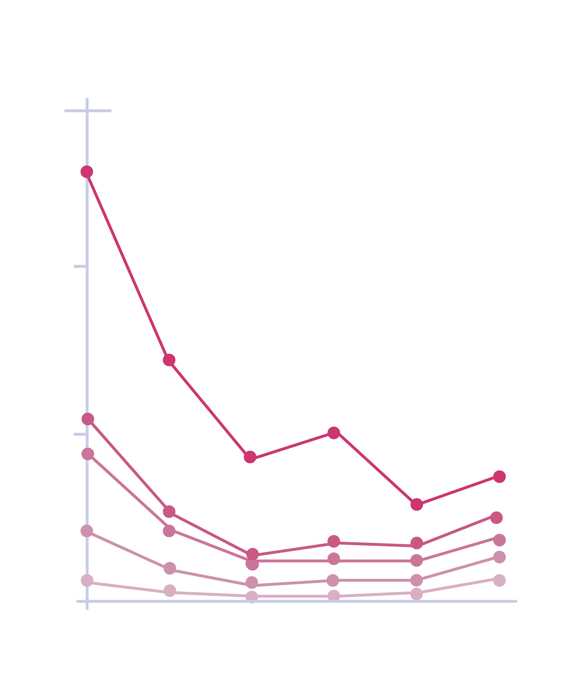

在世界范围内，每年有21万青春期少女怀孕，其中有12.8万青春期少女选择生产。
诞下婴儿后，她们还要面临工作难找、抚养孩子和关系断裂等困境。
从无忧无虑的豆蔻年华到冰冷残酷的现实世界，似乎只是一瞬间，到底是什么在迫使她们长大？
从上世纪60年代到今天，青春期（15-19岁）生育率总体上呈现出了下降趋势。但是，在撒哈拉以南的非洲地区、南亚、中东地区、拉丁美洲和加勒比海地区，情况并不乐观。在今天的非洲地区，青春期生育率数值高达177‰，这意味着每一千名青春期少女中就有177人已经生下了孩子。这些数据或许有些抽象，但你可以试着这样想象：在一所有2000人左右的普通高中里，身边那些和你一起吃饭、学习的女孩中，有177人已经悄悄生下孩子。
那么,在中国呢？
图1 2020世界青少年生育率（‰）
数据来源：WorldBank世界青春期生育率
图2 1990-2015年中国青春期生育率
数据来源：《柳叶刀》Chinese trends in adolescent marriage and fertility between 1990 and 2015
我国1960-2020年青春期生育率总体上呈现出下降趋势，平均值22.13‰在世界范围内也属于较低的行列。但是，据北京大学公共卫生学院教授马军领衔于《柳叶刀》上发表的研究显示：在中国总生育率持续下降的背景下，15-19岁青春期少女的生育率却呈现了出乎意料的增长，特别是在2015年后，这一数据迎来拐点，并于2020年达到近24年来的最高值，人数高达425093，几乎是10年前的1.5倍（295583），20年前的3.3倍（130397）。
⋇注释：由于我国人口基数庞大，仅有2000年、2010年和2020年有较为完备的统计数据，因此，此处仅用15-19岁人口总数与青春期生育率相乘进行计算，并非准确的绝对值。
纵向对比我国2000年、2010年和2020年各省青春期生育率可知，青海省、甘肃省、西藏自治区和贵州省出现较为明显的反弹状况，与全国青春期生育率的反弹趋势相一致。
图3 中国15-19岁育龄妇女生育率(‰)
数据来源：国家统计局《人口普查年鉴》中国各省青春期生育率
数据来源：国家统计局《中国统计年鉴》按年龄分青春期生育率
由此可见，无论是在我国还是世界范围内，未成年妈妈的存在都值得引起我们的注意。
这些女孩有过怎样的经历？她们的未来该何去何从？
而又是什么样的原因让她们“被迫长大”，担当起妈妈的角色？